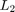

LPVWCGAIN - Worst-case bound on induced L2 norm for pss and plftss
Contents
Syntax: lpvwcgain for pss
[GAM,X,INFO] = lpvwcgain(P) [GAM,X,INFO] = lpvwcgain(P,Xb) [GAM,X,INFO] = lpvwcgain(P,...,POLELIST)
Syntax: lpvwcgain for plftss
[WCG,WCU,INFO] = lpvwcgain(P) [WCG,WCU,INFO] = lpvwcgain(P,OMEGA) [WCG,WCU,INFO] = lpvwcgain(P,...,POLELIST)
Description
lpvwcgain computes the worst-case bound on the induced  norm for pss and plftss systems. The grid based and LFT objects have minor differences in syntax, explained below.
lpvwcgain for pss
[GAM,X,INFO] = lpvwcgain(P) computes the upper-bound on the worst-case induced norm of the LPV system P, assuming no rate-bounds on the independent variables of P. "Worst-case" refers to all the modeled uncertainty and parameter-dependence (including parameter rate-bounds). GAM is the upper bound on the worst-case induced norm. The upper bound GAM and a constant (parameter independent) matrix X are computed to satisfy the induced norm linear matrix inequality (LMI) condition.
[GAM,X,INFO] = lpvwcgain(P,Xb) computes the upper-bound on the worst-case induced norm of the PSS P. The upper bound GAM and a parameter-varying matrix X are computed to satisfy the induced norm linear matrix inequality (LMI) condition. Xb is a basis object that defines the basis functions which describe the assumed parameter dependence of X. INFO is a structure containing additional information about the solution to the LMI.
lpvwcgain for plftss
[WCG,WCU,INFO] = lpvwcgain(P) computes the upper-bound on the worst-case induced norm of the plftss P. "Worst-case" refers to all the modeled uncertainty and parameter-dependence. WCG is the upper bound on the worst-case induced norm. INFO is a structure containing additional information about the solution, including an estimate of the lower bound on the worst-case induced norm, based on LTI worst-case gain analysis. WCU is value of the uncertainty associated with the lower-bound of the induced norm, which is based on LTI worst-case gain analysis.
[WCG,WCU,INFO] = lpvwcgain(P,OMEGA) allows the user to specify a custom frequency vector for the analysis. OMEGA is the chosen vector of frequency values used in the analysis.
lpvwcgain(P,...,POLELIST) allows the user to define weighting functions for the Integral Quadratic Constraints (IQC) used to bound the uncertainty when formulating the LMI to be solved. POLELIST is a 1xN double row vector, of negative values. Each value in POLELIST corresponds to a pole of a stable transfer function that is used as a weight on all signals in the IQCs. A default POLELIST, with three pole values, is used when a POLELIST is not supplied by the user. The three pole values are selected automatically from the frequency range of the system dynamics.